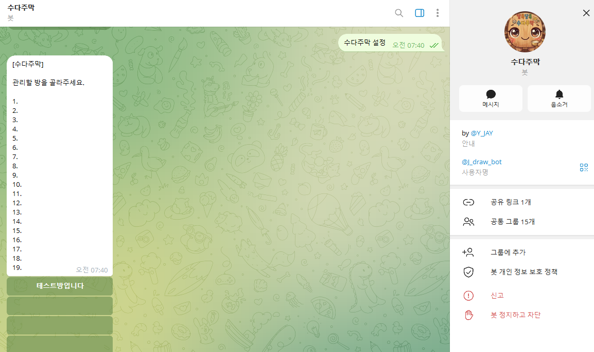
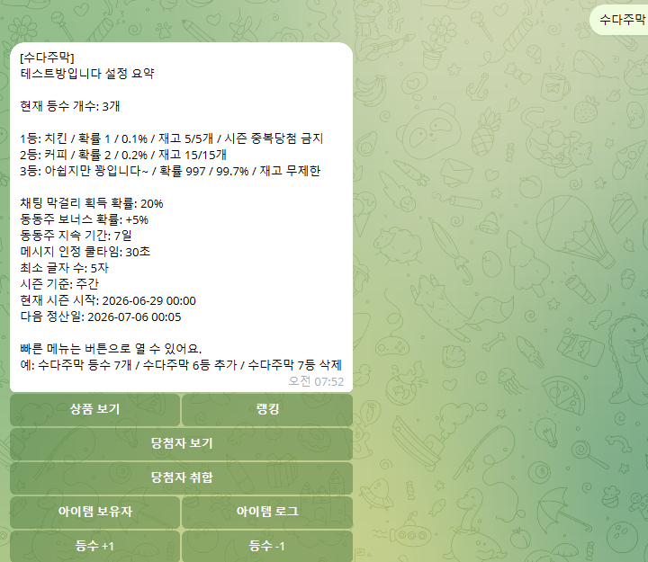
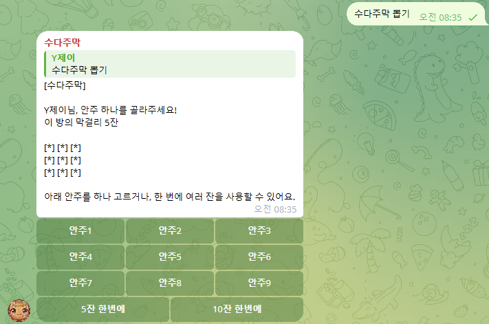
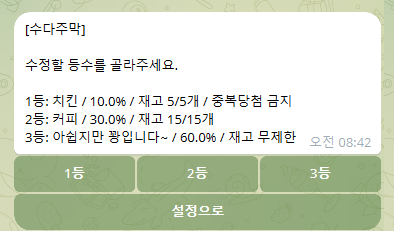
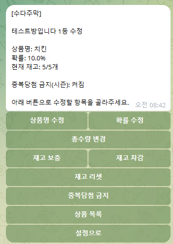

Telegram Bot Guide
수다주막 봇 시작 가이드
처음 사용하는 관리자가 채팅방 초대부터 기본 설정, 상품 설정, 막걸리 지급/차감, 동동주, 권한 구조까지 한 번에 확인할 수 있는 안내입니다.
1. 수다주막 봇은 어떤 봇인가요?
수다주막은 텔레그램 채팅방에서 유저 활동을 보상하고, 막걸리로 뽑기 이벤트를 운영할 수 있는 봇입니다.
- 유저가 채팅방에서 활동하면 설정된 확률로 막걸리를 얻습니다.
- 막걸리는 뽑기에 사용하는 래플권입니다.
- 유저는 채팅방에서
수다주막 뽑기를 입력해 바로 뽑기할 수 있습니다. - 관리자는 봇 DM에서 상품, 확률, 시즌, 재고, 아이템 등을 설정합니다.
- 막걸리와 상품 데이터는 채널별로 따로 관리되며, 다른 채널과 공유되지 않습니다.
- 현재 수다주막 봇은 무료로 제공됩니다.
2. 처음 세팅 순서
처음 사용할 때는 아래 순서대로 진행하면 됩니다.
- 채팅방에
@J_draw_bot을 초대합니다. - 가능하면 수다주막 봇을 채팅방 관리자로 올립니다.
- 운영할 사람이 채팅방 관리자라면 그대로 진행하고, 아니라면 개발자에게 운영권 등록을 요청합니다.
- 개발자에게 채널 화이트리스트 및 수다주막 관리자 등록을 요청합니다.
- 봇 DM에서
수다주막 설정을 입력합니다. - 관리할 채팅방을 선택합니다.
- 기본 설정과 상품 설정을 진행합니다.
채널 허용, 수다주막 관리자 등록, 운영권, 지급프로필 예외는 일반 관리자가 직접 하는 작업이 아니라 개발자가 처리하는 초기 연동 작업입니다.
3. 설정 화면 여는 법
봇 개인채팅 DM에서 아래 명령어를 입력합니다.
그러면 본인이 관리할 수 있는 채팅방 목록이 표시됩니다. 목록에서 채팅방을 선택하면 설정 패널로 들어갈 수 있습니다.


4. 가장 먼저 설정할 것
처음에는 아래 4가지만 먼저 설정하면 됩니다.
각각의 의미는 아래와 같습니다.
- 막걸리확률 30: 채팅이 인정될 때 30% 확률로 막걸리 1잔 지급
- 쿨타임 30: 같은 유저는 30초에 한 번만 채팅 인정
- 최소글자 3: 3글자 이상 메시지만 인정
- 시즌 설정 주간: 주간 단위로 랭킹/당첨자/중복당첨 기준 운영
채팅량이 많은 방은 보수적으로 시작하는 것이 좋습니다.
단기 이벤트처럼 유저 참여를 빠르게 유도하고 싶으면 아래처럼 설정할 수 있습니다.
5. 시즌 설정
시즌은 이벤트 기간을 나누는 기준입니다. 시즌 기준은 랭킹, 당첨자 취합, 시즌 중복당첨 금지, 시즌 동동주 만료 시점에 함께 사용됩니다.
처음 운영할 때는 주간 시즌으로 시작하면 관리하기 쉽고, 이벤트 기간에 맞춰 월간이나 직접 기간으로 바꿀 수 있습니다.
설정 예시:
- 주간: 7일 단위로 시즌을 운영합니다.
- 월간: 월 단위로 시즌을 운영합니다.
- N일: 1일~365일 사이에서 원하는 기간을 직접 정합니다.
- 날짜 범위: 특정 이벤트 기간을 직접 지정합니다.
시즌이 적용되는 기능:
- 시즌 랭킹: 현재 시즌 기준으로 랭킹을 확인합니다.
- 당첨자 취합: 시즌별 당첨자를 모아서 확인합니다.
- 중복당첨 금지: 상품에 중복당첨 금지를 켜면 같은 시즌 안에서 중복 당첨을 막습니다.
- 시즌 동동주: 현재 시즌 종료 시각까지 유지되는 동동주를 지급할 수 있습니다.
진행 중인 시즌은 시작일을 바꿀 수 없고 종료일만 조정할 수 있습니다. 시작 기준을 새로 잡아야 할 때는 현재 시즌을 종료한 뒤 새 시즌을 설정합니다.
시즌이 바뀌어도 상품 재고는 자동 초기화되지 않습니다. 새 시즌 시작 전에는 재고 리셋이나 보충을 따로 확인해야 합니다.
6. 유저는 어떻게 뽑기하나요?
유저는 봇 DM으로 이동할 필요가 없습니다.
- 채팅방에서 활동합니다.
- 설정된 확률에 따라 막걸리를 얻습니다.
- 같은 채팅방에서 아래 명령어를 입력합니다.
막걸리 1잔을 사용해 뽑기를 진행합니다.

7. 랭킹 / 당첨자 / 기록 확인
이벤트 운영 중에는 뽑기 결과만 보는 것이 아니라, 랭킹과 당첨자 기록도 같이 확인하는 것이 좋습니다. 설정 패널의 버튼으로 확인하거나 채팅방에서 명령어로 확인할 수 있습니다.
- 시즌 랭킹: 현재 시즌 기준으로 유저 활동을 확인합니다.
- 전체 랭킹: 시즌과 무관하게 누적 기준으로 확인합니다.
- 당첨자 보기: 전체, 시즌, 주간, 월간 기준으로 당첨자를 확인합니다.
- 당첨자 취합: 시즌별 당첨자를 정리해서 상품 지급용으로 확인합니다.
- 기록: 유저가 자신의 막걸리 사용과 당첨 기록을 확인할 때 사용합니다.
8. 상품 설정
상품은 1등~5등까지 설정할 수 있고, 등수는 유저 순위가 아니라 “상품 등급”입니다.
예를 들어:
상품 설정은 봇 DM의 수다주막 설정 → 상품 보기에서 진행합니다. 패널 버튼으로 등수와 수정 항목을 선택하거나, 아래 명령어를 직접 입력할 수 있습니다.
명령어로 설정하기:
등수와 확률을 한 번에 정리할 때는 아래 기능도 사용할 수 있습니다.
- 등수 개수: 상품 등급 수를 조정합니다.
- 등수 추가/삭제: 이벤트 중 상품 등급을 늘리거나 줄일 때 사용합니다.
- 확률 일괄 설정: 여러 등수의 확률을 한 번에 입력할 때 사용합니다.
- 패널 조작: 설정 패널의 등수 +1, 등수 -1, 새 등수 빠른 등록 버튼으로도 처리할 수 있습니다.
상품명, 확률, 재고, 중복당첨 금지 여부를 등수별로 수정할 수 있습니다.


9. 재고 관리
상품 재고는 시즌이 바뀌어도 자동으로 초기화되지 않습니다. 새 시즌을 시작할 때는 관리자가 직접 재고 리셋이나 보충을 확인하는 방식입니다.
재고 관리는 상품 설정 화면에서 할 수 있습니다.
- 재고 보충
- 재고 차감
- 재고 리셋
10. 막걸리 수동 지급 / 차감
막걸리는 채팅 활동으로 랜덤 지급되지만, 관리자가 직접 지급할 수도 있습니다.
대상 유저의 메시지에 답장한 뒤:
막걸리를 회수해야 할 때는: 실수로 너무 많이 지급했거나, 확정 보상 지급 전에 아래 명령어를 사용합니다.
막걸리 지급/차감은 반드시 대상 유저 메시지에 답글로 사용합니다.
11. 동동주란?
동동주는 막걸리 획득 확률을 올려주는 기간제 아이템입니다.
처음 운영할 때는 동동주 없이 시작해도 됩니다.
기본 동동주 설정:
- 동동주확률: 동동주가 올려주는 막걸리 획득 확률입니다.
- 동동주기간: 동동주가 유지되는 시간입니다. 1분~365일 사이로 설정할 수 있습니다.
특정 유저에게 지급할 때는 대상 유저 메시지에 답장한 뒤 사용합니다.
시즌 동동주는 현재 시즌 종료 시각까지 유지되는 동동주입니다.
시즌 동동주는 별도 기간을 입력하지 않고, 현재 시즌 종료 시점에 맞춰 만료됩니다.
유저는 채팅방에서 아래 명령어로 보유 아이템을 확인할 수 있습니다.
관리자는 설정 패널에서 아이템 보유자, 회수, 아이템 로그를 확인할 수 있습니다.
12. 권한 구조
기본 권한 구조는 아래와 같습니다.
가능하면 수다주막 봇도 해당 채팅방 관리자로 올려두는 것이 좋습니다. 그래야 봇이 텔레그램 관리자 여부를 안정적으로 확인할 수 있습니다.
처음 연결할 때 역할은 아래처럼 나뉩니다.
- 채널 허용 처리
- 해당 채널의 수다주막 관리자 등록
- 필요할 때 운영권 또는 지급프로필 예외 설정
- 초기 연동 문제 확인
- 봇을 채팅방에 초대
- 가능하면 봇을 채팅방 관리자로 올리기
- DM에서 수다주막 설정 열기
- 확률, 쿨타임, 시즌, 상품 설정 운영
즉, 채널 허용과 수다주막 관리자 등록은 개발자에게 요청하면 됩니다. 채팅방 관리자가 직접 해야 하는 초기 작업은 봇 초대, 봇 관리자 권한 부여, 이후 설정 운영입니다.
운영자가 채팅방 관리자가 아니거나, 봇을 채팅방 관리자로 올릴 수 없는 경우에는 운영권으로 대체할 수 있습니다. 운영권 등록은 일반 관리자가 직접 하는 작업이 아니라 개발자에게 요청하는 작업입니다.
요청할 때는 관리할 채팅방과 운영할 사람의 텔레그램 계정 정보를 함께 전달하면 됩니다. 등록이 끝나면 해당 운영자는 그 방의 설정 패널과 운영 기능을 사용할 수 있습니다.
13. 자주 묻는 질문
Q. 막걸리는 관리자가 직접 주는 건가요?
아닙니다. 기본적으로 유저가 채팅하면 설정된 확률로 자동 지급됩니다. 필요할 때만 관리자가 답글로 직접 지급할 수 있습니다.
Q. 유저가 봇 DM으로 가서 뽑기해야 하나요?
아닙니다. 유저는 채팅방에서 수다주막 뽑기를 입력하면 바로 뽑기할 수 있습니다.
Q. 봇 DM은 누가 쓰나요?
주로 관리자가 사용합니다. 관리자는 봇 DM에서 수다주막 설정을
입력해 상품, 확률, 시즌 등을 설정합니다.
Q. 막걸리와 동동주는 뭐가 다른가요?
막걸리는 뽑기에 사용하는 래플권입니다. 동동주는 막걸리 획득 확률을 올려주는 부스트 아이템입니다.
Q. 막걸리가 많으면 좋은 상품이 자동으로 나오나요?
아닙니다. 막걸리는 뽑기 기회이고, 당첨 결과는 상품별 확률에 따라 랜덤으로 결정됩니다.
Q. 시즌이 바뀌면 재고도 자동 초기화되나요?
아닙니다. 재고는 관리자가 직접 리셋해야 합니다.
Q. 1등, 2등은 유저 랭킹인가요?
아닙니다. 1등, 2등은 상품 등급입니다. 예를 들어 1등 상품은 치킨, 2등 상품은 커피처럼 설정하는 구조입니다.
14. 유저 명령어 요약
이 가이드는 관리자용이므로 유저 명령어는 보조 정보로만 보면 됩니다. 유저가 자주 쓰는 명령어는 아래 정도입니다.
15. 처음 운영 추천 순서
처음에는 아래 순서대로 진행하면 됩니다.
- 봇을 채팅방에 초대
- 봇을 채팅방 관리자로 설정
- 개발자에게 채널 허용 및 수다주막 관리자 등록 요청
- 봇 DM에서 수다주막 설정
- 관리할 채팅방 선택
- 막걸리확률 설정
- 쿨타임 설정
- 최소글자 설정
- 시즌 설정
- 상품명 / 재고 / 확률 설정
- 테스트 유저로 막걸리와 뽑기 확인
처음에는 복잡해 보여도, 실제로는 아래 흐름만 이해하면 됩니다.